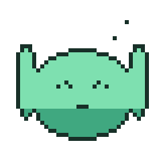

video / gif
The baseline. Pre-baked pixels, no interactivity — but "pre-baked" isn't one thing. GIF and video solve different problems and get reached for in different moments; the rest of this page is about knowing which is which.
the sticker
A GIF's whole value is that it's not a video in any way that matters to where it
gets used: it's an <img>, so it drops into a chat bubble, an email,
a markdown README, or a place with no video player and no autoplay policy to fight —
and it just plays, no controls, no pause button, the instant it's visible. That's also
its whole liability: you can't script it to respect prefers-reduced-motion
short of swapping the file, and its 256-color palette makes it a poor fit for anything
photographic. It earns its place as a short, iconic, looping mark — a reaction,
a status, a mascot — not as a video substitute. The four below are one character, baked
once, staged in four real contexts to show why each reaches for a GIF specifically.

 processing — 64%
processing — 64%

away · back in 20m
the broadcast
Video wins the instant the content stops being a handful of flat colors — continuous
tone, gradients, real lighting, all the things a GIF's palette chokes on — because a
real codec spends its bits on change between frames, not on re-describing every
pixel. It also comes with a real element: <video> can be paused,
scrubbed, muted, rate-changed, and — the one that matters most for slide 14 later —
told to stop for prefers-reduced-motion from actual JS, something a GIF
<img> can't do on its own. The clip below is a from-scratch bake:
a cel-shaded 3D slime with real physics, run through a CRT/scanline pass and dressed
as a broadcast test loop, so the reference asset argues its own case.
TD‑VIDEO not baked yet — cel-shaded slime + CRT pass is the next build step, see gen/scene.html
SCOPE.md · slide 04
"Baseline: Video & GIF — pre-baked pixels, no interactivity; visual: thread demo as GIF and video side by side with file sizes labeled."
Extended past the original scope note: rather than one GIF/MP4 pair of the thread demo, this page treats GIF and video as two distinct assets with distinct jobs, each shown in the real-world contexts that argue for reaching for it. The thread-demo brandmark resolve (SCOPE.md's original ask) is still blocked on the vector-path dependency — the slime is a stand-in character built specifically for this page so the format comparison has something real to look at while that's outstanding.